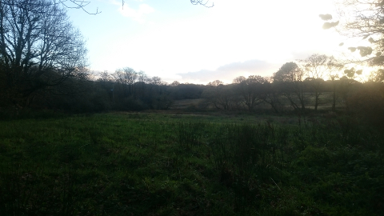

In year one
We will offer a single bell tent, containing sleeping platforms for four (one double, two single or 4 singles).
The facilities are minimal. One composting toilet, a clay pizza oven, wood for the fire, fire pit and seats, a fresh water source and a few acres of beautiful Welsh land and views...
All you have to bring is your bedding, food and your camping equipment as needed. If you're unsure of what else you may need, ask away!
Costs
Bell tent £100 p/n
From 1st of August to 25th of August – the last three days are a festival fund-raiser for next year (prices TBC)
In year two
We will have 2 tents available.
In year three
We hope to expand to new land and offer 5 tents and 10 pitches/clearings to bring your own tents... keep in touch to see what else grows here....